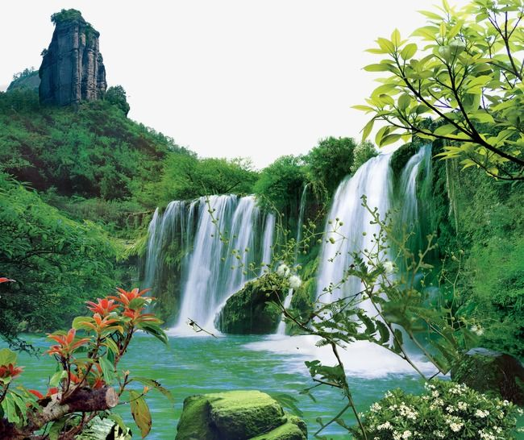

<ion-header>
  <ion-toolbar>
    <ion-title>Profile Picture</ion-title>
  </ion-toolbar>
</ion-header>

<ion-content>
    <div>
      
    </div>
    <ion-button expand="block" class="pics" color="primary">CHOOSE A PICTURE FROM PHOTOS</ion-button>
    <ion-button expand="block" class="pics" color="primary">TAKE A PICTURE</ion-button>
    <ion-button (click)="closeModal()" expand="block" class="pics" color="primary">Cancel</ion-button>
</ion-content>
